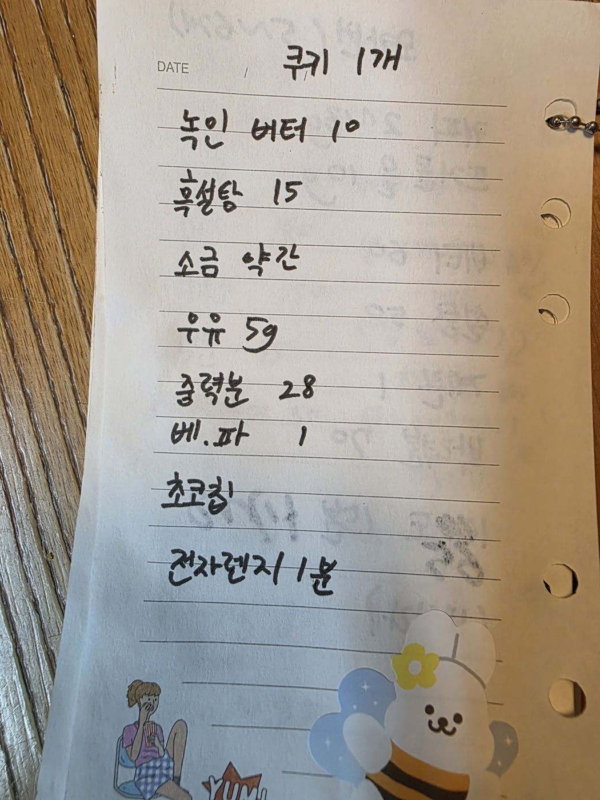

← 전체 레시피
쿠키
☕ 전자레인지 머그 쿠키
손으로 적은 노트를 그대로 옮긴 레시피입니다.
분량
1개
굽기
전자레인지 1분
📷 원본 노트 사진 보기
재료
재료
녹인 버터 10g
흑설탕 15g
소금 약간
우유 5g
중력분 28g
베이킹파우더 1g
초코칩
만드는 법
녹인 버터에 흑설탕·소금·우유를 섞는다.
중력분과 베이킹파우더를 섞고 초코칩을 넣는다.
머그컵에 담아 전자레인지에서 1분 돌린다.

원본 노트 사진 — 탭하면 크게 볼 수 있어요